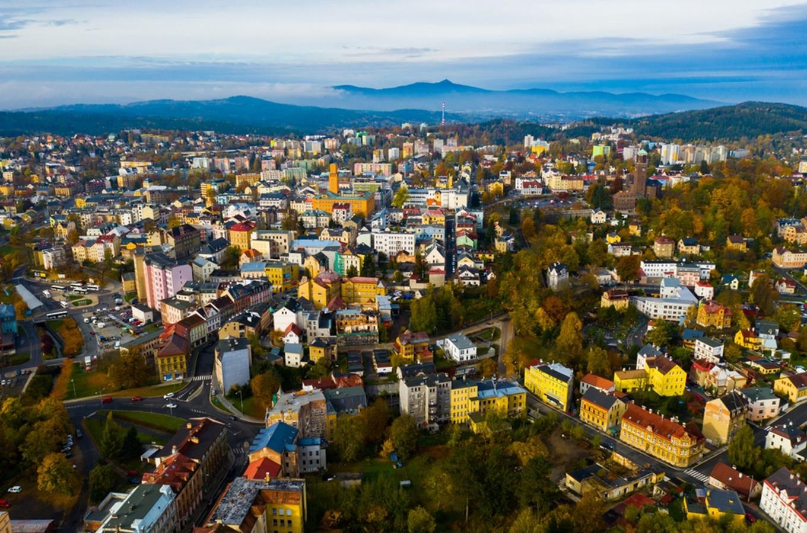
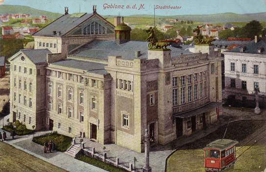
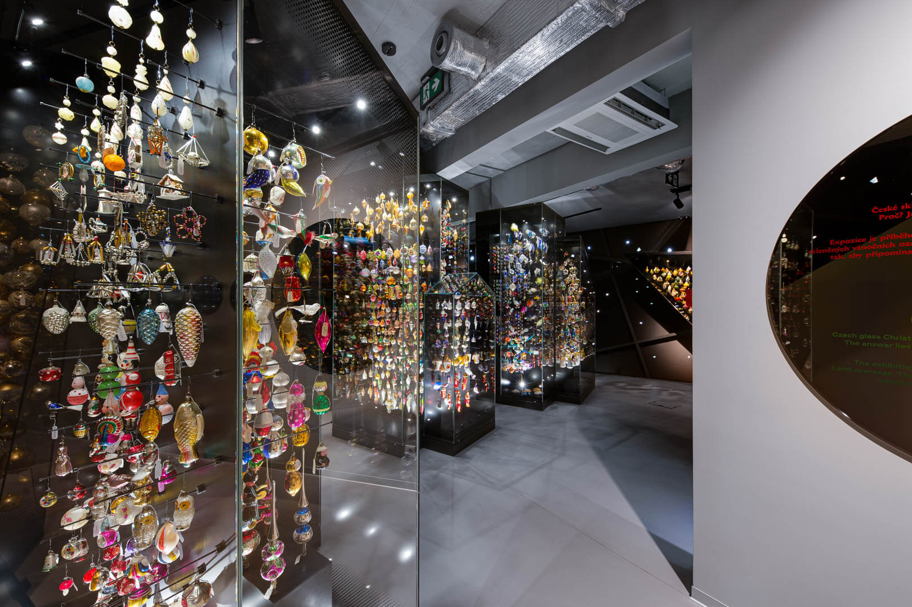
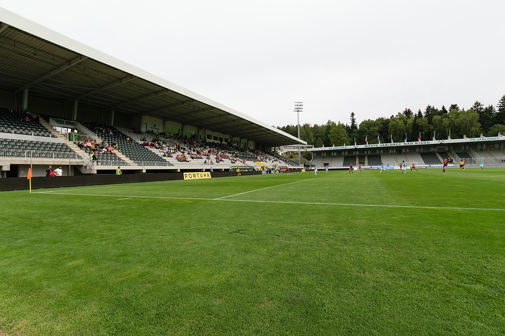
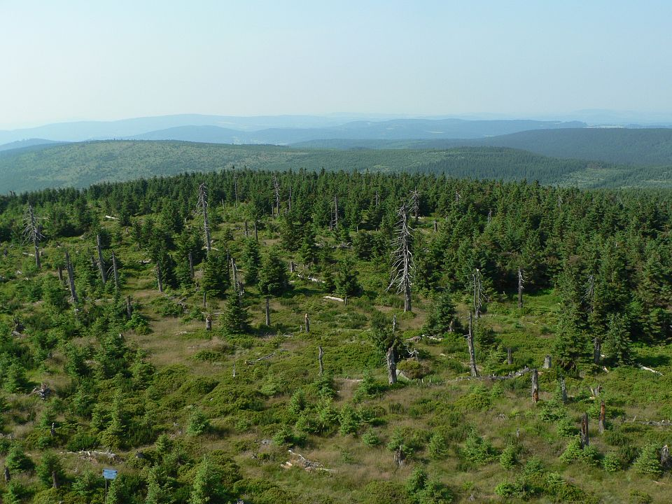

Jablonec nad Nisou je statutární město v okrese Jablonec nad Nisou v Libereckém kraji. Leží 9 km jihovýchodně od Liberce, v údolí řeky Nisy a jejích přítoků. Na ploše 31,4 km² zde žije přibližně 45 tisíc obyvatel. Město proslulo výrobou skla a bižuterie, je v něm však zastoupena i řada jiných průmyslových odvětví. Jablonec a okolí nabízejí množství sportovních i turistických aktivit (Maloskalsko, Jizerské hory). Jablonec v podstatě vytváří souměstí s Libercem. Jablonec nad Nisou najdete na severu země v náruči Jizerských hor, cca 500 m. n. m. Říká se, že buď tu jdete do kopce nebo prší.
Info
Historie
První písemná zmínka o Jablonci pochází z roku 1356, v němž byla obnovena fara a postaven kostel sv. Anny. Během husitských válek byla obec ušetřena, avšak za vlády Jiřího z Poděbrad Jablonec jako součást maloskalského panství, přívržence husitů, dne 30. srpna 1469 stejně jako obce Rýnovice, Maršovice a Jistebsko neunikl vypálení. V zemských deskách z let 1538 a 1543 se pak uvádí jako pustý. K pozvolnému znovuosídlování došlo až v druhé polovině 16. století, především v souvislosti s podmínkami pro sklářství. V druhé polovině 17. století už sklářství zažívalo bouřlivý rozvoj a díky vývoji techniky drahokamové řezby se k němu přidal i průmysl bižuterní. K tomu hojně přispěli mistři „štajnšnajderové“, kteří na této technice pracovali. Během třicetileté války (roku 1643) byl Jablonec s okolními vesnicemi vypálen znovu.
Kam se vydat
V Jablonci je důležitá přehrada Mšeno, která se nalézá nedaleko centra Jablonce nad Nisou, a to v bezprostřední blízkosti jeho sídlištní zástavby. Patří tak mezi největší městské nádrže ve střední Evropě a tvoří údajně největší vnitroměstskou plochu v Evropě na východ od Ženevského jezera. Další návstěvu, kterou můžete provést je plavecký bazén, který najdete hned vedle přehrady nabízí kromě osmi závodních drah (v délce 25 m) také atrakce pro děti včetně dvou tobogánů. V areálu bazénu je k dispozici také sauna, parní komory, masáže nebo volejbalové plážové kurty. V létě je za příznivého počasí otevřena sluneční louka s brouzdalištěm. Určitě nesmíte zapomenout na Muzeum skla a bižuterie v Jablonci nad Nisou, které je jediné. Nikde jinde na světě nenajdete muzeum zahrnující obory skla a bižuterie pohromadě, sbírku bižuterie všech materiálů a technologií. Najdete u nás druhou největší sbírku skla v České republice a současně jednu z nejvýznamnějších v Evropě a největší veřejnou sbírku skleněných vánočních ozdob na světě. Celý sbírkový fond muzea čítá na 12 milionů unikátních předmětů.
Sport
Nejúspěšnějším jabloneckým sportovním oddílem je fotbalový klub FK Jablonec. Do nejvyšší soutěže se prvně podíval již v 70. letech 20. století, tehdy pod názvem Liaz Jablonec. Znovu se do ní probojoval roku 1994 a od té doby ji neopustil. Nejlepšího výsledku dosáhl v sezóně 2009/10, kdy skončil na druhém místě. Pětkrát bral také ligový bronz. Dvakrát vyhrál český pohár (1998, 2013). Díky tomu se podíval již několikrát i do evropských pohárů. Zde se mu spíše nedařilo, nicméně památným je skalp FC Kodaň z Evropské ligy 2015/16. Dvakrát hrál Jablonec v Evropské lize základní skupinu. Dres Jablonce oblékal i legendární střelec David Lafata. K dalším reprezentantům v kádru patřili Milan Fukal, Miroslav Baranek, Karel Piták, Jan Kopic nebo Václav Pilař. Své domácí zápasy hraje FK Jablonec na stadionu Střelnice s kapacitou 6108 diváků. V roce 2008 se na tomto stadionu konalo i Mistrovství Evropy hráčů do 19 let. Je ligovým stadionem v nejvyšší nadmořské výšce, rozmary počasí na Střelnici jsou tedy pověstné.
Přírodní zajímavosti
Jablonec nad Nisou je zasazen do nádherné přírody. Od západu sem zasahuje Žitavská pánev, v jejímž okrsku Jablonecká kotlina se rozkládá vlastní centrum města, které je ze zbývajících světových stran obklopeno Jizerskými horami (na severním okraji města jde o okrsek Tanvaldská vrchovina, na východě Černostudnický hřbet, na jihu Maršovická vrchovina). Výše položené partie Jizerských hor na severu jsou dobře přístupné i MHD, jejíž autobusy zajíždí až do Bedřichova – ráje běhu na lyžích. Při okrajích města jsou dobře přístupné dva zalesněné hřebeny – na jihovýchod od Jablonce je to Černostudniční hřeben s rozhlednou na vrcholu Černá studnice, na severozápadním okraji města pak Prosečský hřeben s rozhlednou Nad Prosečí; obě lokality skýtají možností dobrého výhledu. Nedaleko Jablonce se nachází také přírodní park Maloskalsko, malebný mikroregion s množstvím rozeklaných pískovcových skal protnutých tokem řeky Jizery.
